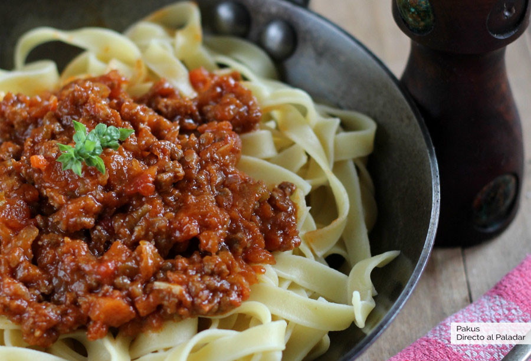

Salsa Facil y Barata

Hoy vamos a preparar la receta de la salsa boloñesa auténtica también llamada salsa bolognese o salsa de ragú, la salsa de pasta a base de carne y verduras típica de la ciudad de Bolonia en Italia. Como veréis, no se trata de freír carne y añadir salsa de tomate frito como vemos a menudo en casas de amigos, comedores y tristemente, también en algunos restaurantes.
Ingredientes
-
Carne picada
500
-
Cebolla grande
1
-
Zananhoria 1
-
Apio una rama
-
Tomate perita 3
-
Tomate concentrado cucharas 2
-
Vino blanco 100ml
-
Agua
Manos a la obra
-
Tiempo total 2hs 45min
-
Elaboracion 15min
-
Coccion 2hs 30min
A tu olla
-
Comenzamos picando en trozos muy pequeños la zanahoria, el apio y el ajo. La cebolla también la cortamos en brunoise muy fino, de forma que todas las hortalizas tengan así un tamaño similar al de la carne, para que no destaquen sobre ella. Las pochamos con aceite de oliva durante diez minutos a fuego lento. Añadimos la carne picada. Cuando la carne picada haya cambiado de color, agregamos el vino blanco y dejamos que se evapore mientras removemos.
-
Después agregamos el tomate picado en trozos un vaso de agua y el concentrado de tomate, dejando que todo se cocine durante unos veinte minutos más. Aunque ya aparente estar hecho, la tradición para hacer una buena salsa boloñesa exige una larga cocción. Por eso nosotros vamos a dejar que nuestra boloñesa se cocine a fuego lento durante al menos 1 hora y media más, totalizando dos horas.
-
Para que no se quede seca la salsa en tan larga cocción, podemos ir añadiendo agua, caldo o vino cuando veamos que se está secando mucho. Incluso hay recetas clásicas que añaden un poco de leche. Recordad que el objetivo es conseguir una salsa espesa de carne y hortalizas estofadas, ligadas ligeramente por un poco de tomate y no preparar una salsa de tomate con tropezones.
-
Otra cosa importante es que al contrario de nuestra costumbre habitual, la salsa boloñesa no se sirve habitualmente con espaguetis sino con otras pastas largas pero anchas como los fetuccini o los papardelle que son los idóneos para acompañar esta salsa. Además, esta salsa si os sobra es perfecta para hacer empanadas de carne o pasteles de carne cubiertos de puré de patata.